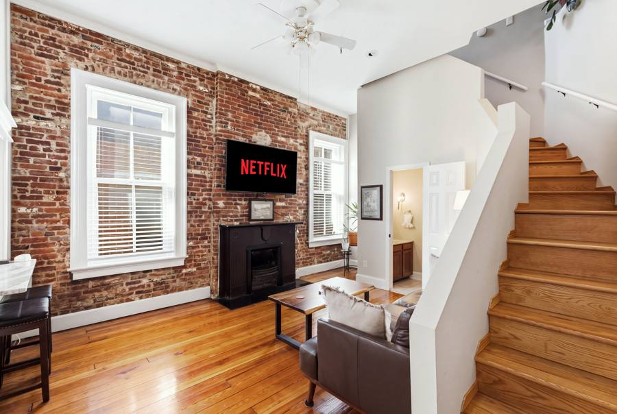

Home / The Bourbon Trail
FRANKFORT · VERSAILLES
The Bourbon Trail
A 1904 mansion with a speakeasy and theater, a Versailles home minutes from Keeneland, and two lofts in Frankfort's entertainment district.
Home / The Bourbon Trail
FRANKFORT · VERSAILLES
A 1904 mansion with a speakeasy and theater, a Versailles home minutes from Keeneland, and two lofts in Frankfort's entertainment district.
THE AREA
Frankfort is the capital of bourbon country. Buffalo Trace is minutes from downtown, Castle & Key and Woodford Reserve are a short drive, and Keeneland is about 20 minutes away. Stay walkable downtown or settle into a historic home in Versailles.
About five minutes from downtown Frankfort.
A restored castle distillery on McCracken Pike.
Rolling horse country, about 11 miles from Frankfort.
Live racing in April and October.
OUR HOMES
 The Bourbon Trail
The Bourbon TrailDowntown Frankfort
1904 mansion · speakeasy · theater · sleeps 14
View home → The Bourbon Trail
The Bourbon TrailVersailles
1903 home · covered patio · sleeps 8
View home → The Bourbon Trail
The Bourbon TrailSt. Clair Street · Frankfort
2-story loft · sleeps 4
View home →
The Bourbon TrailSt. Clair Street · Frankfort
King loft for two · sleeps 2
View home →GUESTS SAY
“Great visit. Perfect for the Bourbon Trail. Our group of 8 enjoyed all the amenities and appreciated the cleanliness and the location in the middle of Frankfort. Would highly recommend for a group trip.”
“The house worked well for our group of 8. We enjoyed the pool table, bar and home gym. The location downtown was wonderful and we were able to walk to the restaurants and bars nearby. I would highly recommend this house for anyone visiting.”
“The house was great and the location was perfect. Perfectly located for the Bourbon Trail, Keeneland or exploring Lexington. The House is spacious and has a lot of gathering areas and a great kitchen. Perfect for Labor Day weekend family gathering.”
“Overall a very nice, comfortable and spacious place, very attentive and responsive, even checking on us during a storm to make sure all was good. Would stay again if in the area.”
“Very cool loft, loved all the old wood that had been restored. Located by the old capital buildings. Short walk to the riverside trail.”
“Shane was a super host and answered all our questions. The place is super clean and very nice. Location is perfect. Close walking distance to anywhere in downtown Frankfort. Highly recommend!”
“We had a great stay! The loft was freshly remodeled, clean, and comfortable. Its central location made it the perfect home base for exploring multiple bourbon distilleries. There were also plenty of great restaurants and bars nearby, many featuring live music.”
“Great stay in Frankfort. Super clean and exactly as pictured. Comfy king sized bed. Will definitely look to stay here again when visiting this area. Bars and restaurants right out the front door. Close to many distilleries.”
BOOK DIRECT PERK
Book on our site and get a complimentary early check-in or late checkout, up to 2 hours, when available. Same homes, same hosts, always a lower price than Airbnb or Vrbo.